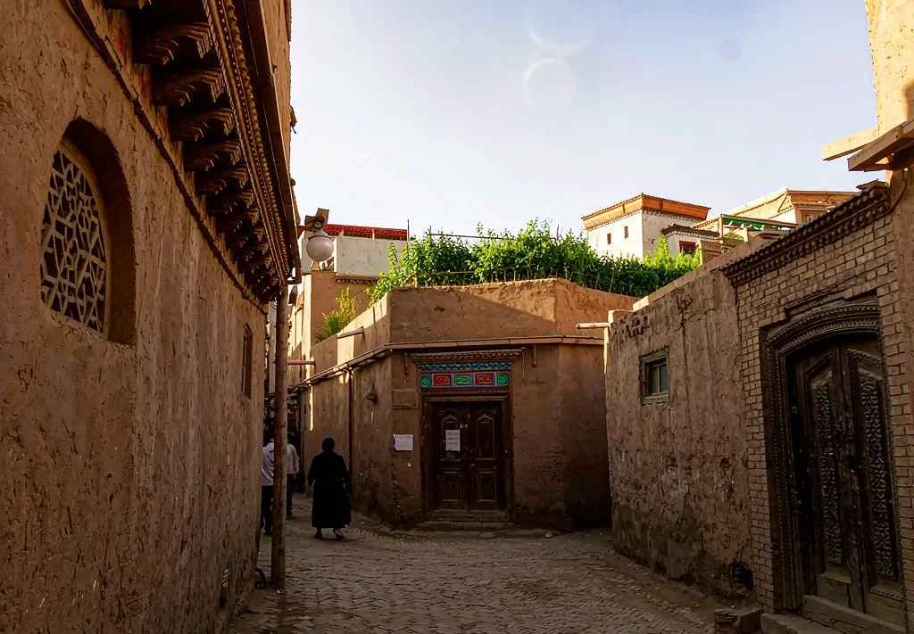

Seasons
Seasons
Complete guide
Your first trip to Xinjiang, in one read
The six questions we are asked most: where, how long, how much, how to travel, what to pack, and whether it is safe.
1. North or south?
The Tianshan divides Xinjiang into two landscapes. The north is grassland, lakes, snow peaks and birch woods — Kanas, Hemu, Sayram Lake and Ili. The south is desert, ancient cities, canyons and a deeply layered culture — Kashgar, Kuqa, the Pamirs and Hotan. For a first visit with under 15 days, we usually suggest choosing one side rather than squeezing in both.
Come for landscape and photography: choose the north. Come for the Silk Road and Uyghur life: choose the south. To do both properly, allow 18+ days or plan two trips.
2. How many days?
- 4–5 days: a Duku Highway crossing, a Turpan highlight loop, or the Ürümqi area
- 8–11 days: one circuit of the Ili valley, or Altay plus Kanas
- 15–17 days: the Grand Northern Loop — lakes, grasslands, desert highway and Turpan
- 18+ days: combining north and south, or adding a southern Silk Road leg
The common mistake is not too few days but too many sights. Distances between highlights run 200–500 km; three far-apart stops in one day means spending the whole day in a car. Our itineraries deliberately follow a long driving day with a slow one.
3. What should you budget?
Four things move the number: days, vehicle type, season and accommodation level. A private group is priced as a daily vehicle charter, so larger parties share the cost more efficiently; July–August and the two autumn-colour weeks are the year's peak.
- Vehicle and driver: the core of the quote, normally including fuel, tolls and driver meals/lodging
- Accommodation: chosen to your budget, booked by us and itemised
- Park tickets and shuttle buses: numerous and not cheap — budget a separate line
- Flights: international legs and domestic connections vary widely and are quoted separately
Do not compare "from" prices. A cheap quote often strips out tickets, guiding, lodging or transfers. Ask for an itemised quote — that is the only comparable number.
4. Private group, big tour or independent travel
Independent travel here is hard not because of language but because of distance and road conditions: public transport to remote scenic areas is limited, and seasonal closure news is not always timely. Large set tours tend to rush, include shopping stops and enforce early departures — the opposite of what makes Xinjiang special.
A private group sits between the two: 2–8 people form one party, a dedicated vehicle and local driver handle the logistics, and the pace is yours. Add a private guide for history, food and local stories. This is what we mainly do.
5. Documents, safety and connectivity
- Visitors from outside mainland China: a valid passport and visa (or an applicable visa-free arrangement); some border or restricted areas require permits arranged in advance, which we help confirm
- Keep ID on you: hotels, ticket offices and scenic areas verify names
- Main travel routes are well established with year-round operators and full airport and visitor infrastructure
- Some overseas social and messaging services need alternatives on the mainland — arrange your contact channel before departure
- Mobile payment is ubiquitous, but carry a cross-border-capable card and some cash as well
For international travellers: we can work entirely in English and confirm dietary restrictions, religious needs and airport transfers in advance. If you need help planning visas or flight connections, raise it in the same enquiry.
6. Pre-departure checklist
- Sun protection and warm layers together: mountain day/night swings can exceed 10°C
- Moisturiser and lip balm — Xinjiang is extremely dry
- Comfortable walking shoes: most scenic areas still involve a walk
- Power bank, plug adapter and any regular medication
- If taking the Duku or Yizhao highways, recheck that year's opening notice a week out
Think through these six and your itinerary already has a skeleton. The remaining details are best filled in by people who are on these roads every week.
Keep reading
Further reading
Seasons and route choice are the two decisions people get stuck on.
Seasons
Choosing a routeIndexRather not do the research?
Send your days, party size and wish list, and we will reply with an itinerary and quote to discuss.
Get a quote